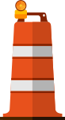

Hed
Dek
 on the arrows to move through the graphic.
on the arrows to move through the graphic.
Bloor-Yonge Station
How annoying: 
Bloor-Yonge Station and nearby buildings will be undergoing construction to improve capacity with a new exit to Bloor Street, a new second platform for eastbound travellers on Line 2, at the busy TTC station, which may cause headaches for commuters.
Advanced construction started this April, including the removal (demolition?) of buildings at 81 Bloor Street East and 40/42 Hayden Street to make a new and accessible subway entrance.
The former carwash at 830 Church Street next to Toronto Reference Library will also be removed to “build a future fan building to enhance air circulation at the station.”
Advanced utility relocation work on Bloor Street East will start in late Q2 of 2023, with major construction set to begin in 2024.
Read More here
Lakeshore East
How annoying:
Gasmains are being replaced by Enbridge along Lakeshore Blvd West starting at Fort York Blvd to Cherry Street. The work is expected to be complete in 2023 and 2024. Surrounding streets like Parliament Street (from Mill St. to Lakeshore Blvd E), Richardson St. (from Lakeshore Blvd E to Queens Quay E - until 2024) will also be under construction.
Lakeshore Blvd West from Dan Leckie Way to Rees Street is also under construction by Enbridge.
Lakeshore Blvd West from Rees Street to Spadina Ave will see the eastbound north curb lane occupied until August 2023 for Enwave's Deep Lake Cooling Expansion Project. (major)
Lakeshore West
How annoying:
Waterfront Toronto will be constructing new infrastructure or making changes to existing infrastructure from Jarvis Street to Richardson Street until 2023. They'll also be enhancing infrastructure between Sherbourne Street and Bonnycastle Street.
Two westbound lanes will be closed from Cherry St. to Carlaw Ave. until April 10, 2024 for the reconstruction of the Don River Bridge.
Gardiner
How annoying:
Lakeshore Blvd E from the Bay St. north Gardiner Expressway ramp to Yonge street currently has two westbound and one eastbound lane closed for gasmain installation. The closure is expected to last until May 6, 2023. (major)
Front
How annoying:
Lakeshore Blvd E from the Bay St. north Gardiner Expressway ramp to Yonge street currently has two westbound and one eastbound lane closed for gasmain installation. The closure is expected to last until May 6, 2023. (major)
Wellington
How annoying:
A watermain is being replaced from Bathurst Street to Portland Street. This work may include replacement of fire hydrants and water valves. This work is being carried over until Q3 2023.
Individual lanes on Wellington Street from Blue Jays Way to Clarence Square may be closed or the entire road may be closed into Q3 of 2022 due to old asphalt being replaced with new asphalt, as well as repairs to any damaged sidewalks and curbs.
TIKLKLKE
How annoying:
Sed id purus consectetur, convallis lorem eu, sollicitudin libero. Maecenas venenatis nec velit at auctor. Suspendisse convallis vel orci consectetur elementum. Nullam non tincidunt odio.
Source: TKTK
Toronto Star graphic